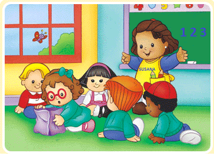

Atención Mantenida
Esta se puede entender como el tiempo que una persona es capaz de concentrarse en un estímulo simple o en una representación antes de que empiece a cometer errores. En las actividades escolares la atención sostenida es fundamental, al igual que en muchas actividades laborales (controladores aéreos, controladores de tráfico, juegos, corregir galeradas, examinar productos, etc.).
Además la capacidad de la atención está influida por varios factores:
1) Evaluación de esfuerzo que requiere la tarea.
2) Disposición estable orientada a la supervivencia.
3) Orientación a objetivos transitorios dependientes de las necesidades del momento.
4) El nivel de activación emocional (arousal).
Los niveles de activación son un factor crucial. Cuanto mayor es el nivel de activación, mejores resultados se obtienen, siempre que no sobrepase el punto óptimo. Parece lógico pensar que en el déficit de atención, las diferentes clases de atención no se optimizan de igual forma. Los tipos de atención que más se ven afectados en los niños con Déficit de Atención suelen ser: la atención sostenida y selectiva.